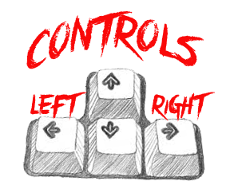

The game breakout was released in 1976. There are a layer of bricks at the top
of the screen and a ball moves across the screen. The ball bounces of the top and
side of the screen. When the ball hits a brick, the ball bounces away and the brick
disappears. When the ball hits the bottom of the screen, a life is lost, so to prevent
this the player controls a paddle at the bottom of the screen.